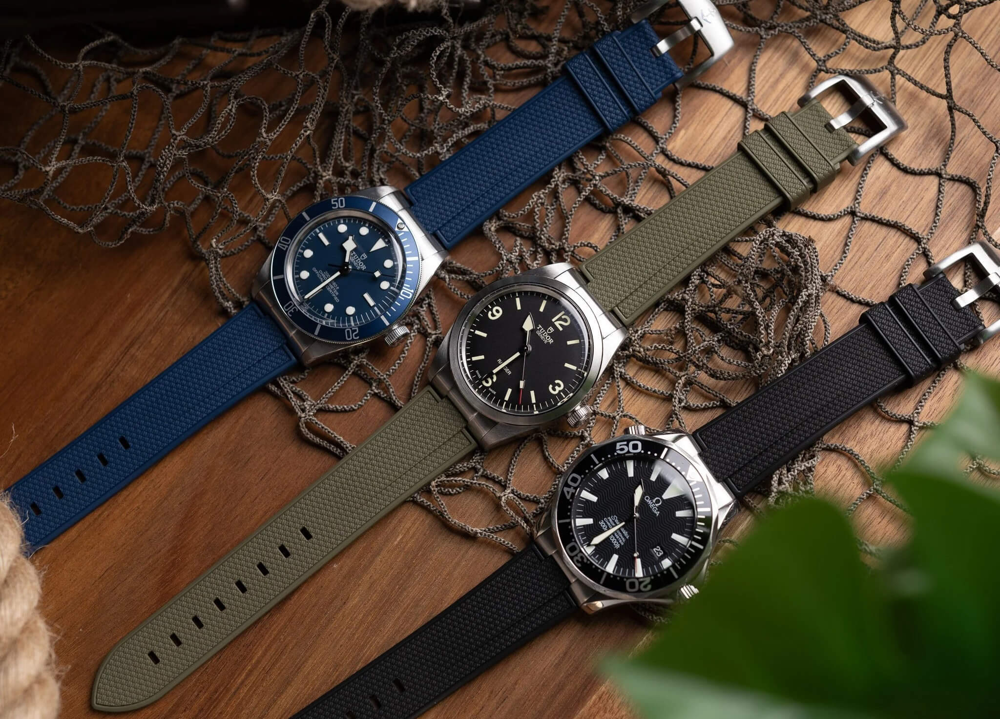
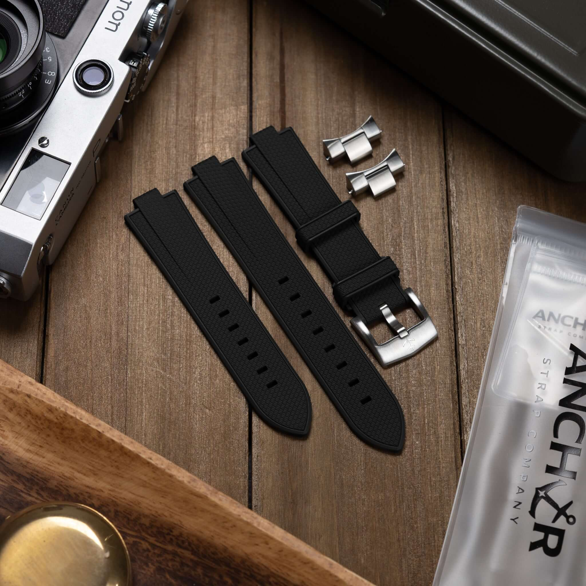
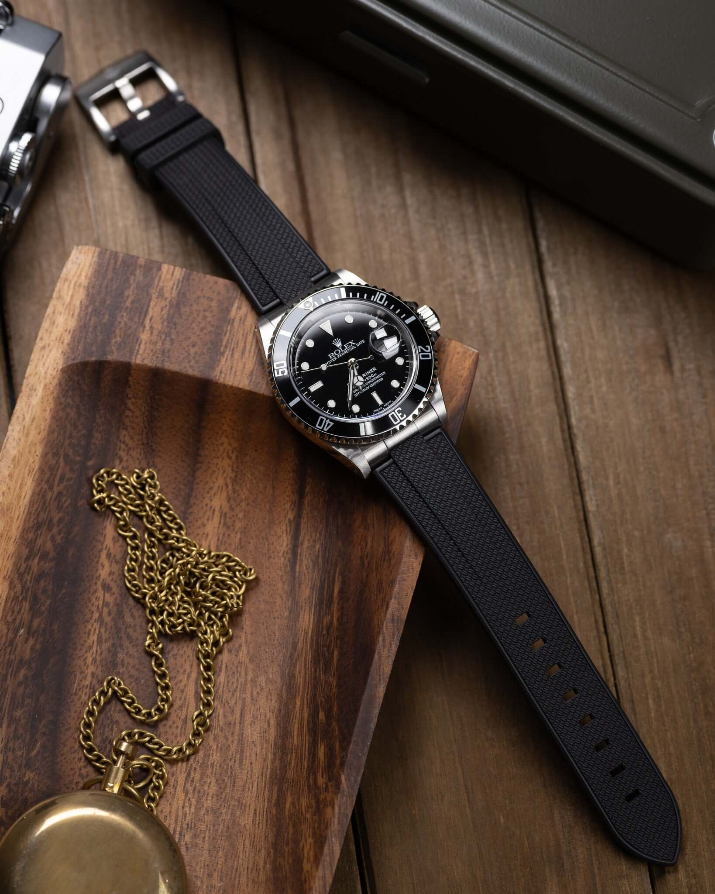
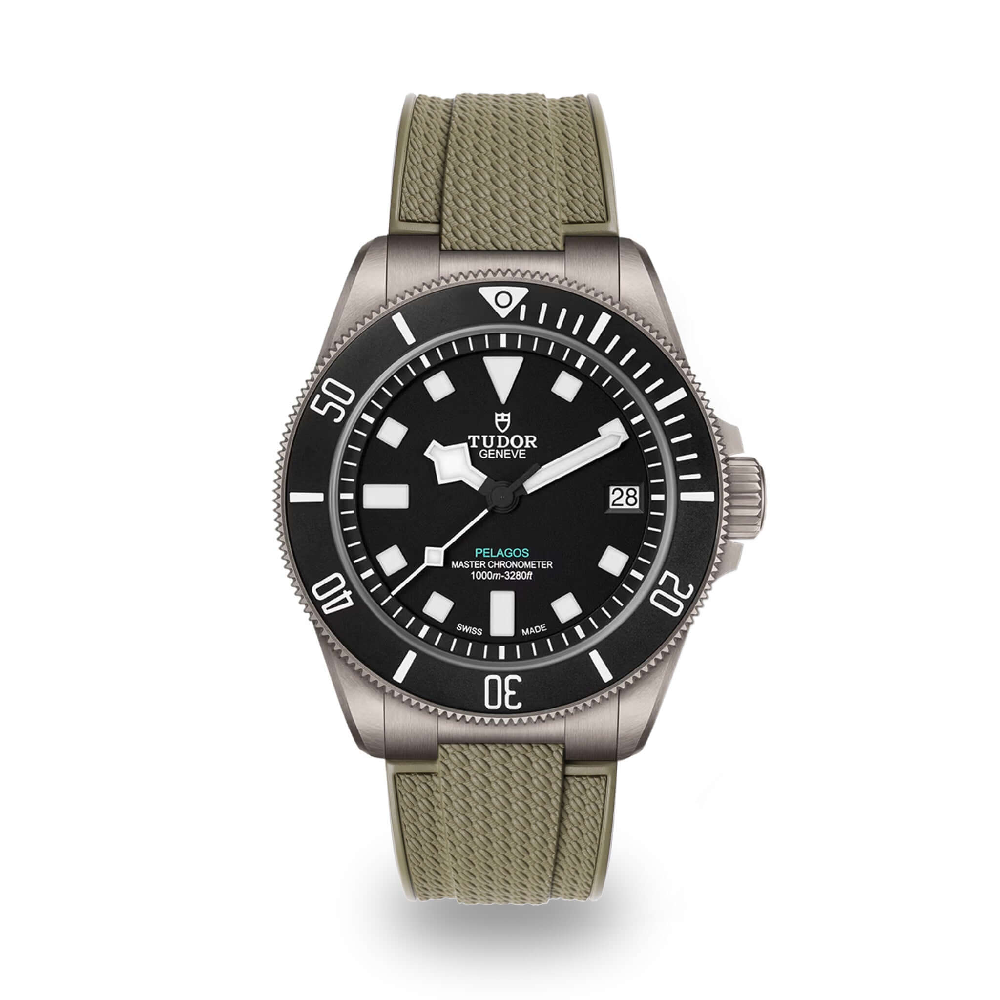

Introducing: Anchor Strap Co. AnchorFlex™ End-Link Straps for the Submariner 16610, Pelagos, Ranger 36, HydroConquest 39 and Speedmaster
Anchor Strap Co. has added five new watch fits to its AnchorFlex™ End-Link line of FKM rubber straps with fitted end links. The new models cover the Rolex Submariner Date 16610, the Tudor Pelagos Ultra and Pelagos 42, the Tudor Ranger 36, the 2026 Longines HydroConquest 39 and the Omega Speedmaster 1861. The brand also launched an online End-Link Strap Builder.
 Nenad Pantelic • November 20, 2026
Nenad Pantelic • November 20, 2026

The line comes in two versions: the AnchorFlex™ End-Link, and the AnchorFLEX™ End-Link Deployant. The buckle version is a complete kit with machined 316L steel end links, spring bars and a 316L tang buckle, so the original bracelet is not needed. The deployant version is designed for an optional 18mm Precision Deployant Clasp. On some deployant models the end links are included. On others, the owner reuses the end links from the watch's original bracelet.
The Basics
| Brand | Anchor Strap Co. |
| Product | AnchorFlex™ End-Link and AnchorFlex™ End-Link Deployant |
| Material | FKM rubber |
| End links | Machined 316L stainless steel (included on buckle kits and some deployant models) |
| Buckle version | 3 pieces: 80mm buckle end, 100mm and 120mm hole ends; 316L tang buckle included |
| Deployant version | 3 pieces: 75mm and 100mm clasp ends, 105mm hole end; clasp sold separately |
| Fits wrists | 5.25 to 8 inches |
| Colours | Bathyscaphe Black, Sea Moss Green, Navy Blue (not every colour for every watch) |
| Price | $95 to $140 |
The New Fits
Rolex Submariner Date 16610. Buckle version, $140, in Sea Moss Green and Bathyscaphe Black. Fits the 40mm Submariner Date 16610 with 20mm lugs. End links and buckle are included. Does not fit the 116610 (Maxi case) or the 41mm 126610. A deployant version is listed at $120 with end links included, but it was showing as not available at the time of writing. A 16610 deployant can be configured in the Strap Builder.
Tudor Pelagos Ultra and Pelagos 42. Deployant version, $95, in Sea Moss Green and Bathyscaphe Black. Fits the Pelagos Ultra (M2543C1A7NU, 43mm, 22mm lugs) and the Pelagos 42mm (25600 series, including the 25610 LHD). Uses the original Pelagos end links, which are not included. Does not fit the Pelagos 39, the FXD or FXD Chrono, or a Pelagos bought without its bracelet.
Tudor Ranger 36. Deployant version, $95, in Sea Moss Green and Bathyscaphe Black. Fits the Ranger 36mm (M79930 series, 19mm lugs) with the three-link steel bracelet. Uses the original Ranger end links, which are not included. Does not fit the Ranger 39 (79950 series).
Longines HydroConquest 39. Buckle version, $119, in all three colours. Fits the 2026 HydroConquest 39mm (L3.779 series, 20mm lugs). End links and buckle are included. Does not fit the previous HydroConquest 39 (L3.780, 19mm lugs) or the 41mm and 43mm models.
Omega Speedmaster 1861. Buckle version, $119, in all three colours. Fits the pre-2021 Speedmaster Professional Moonwatch 42mm with calibre 1861 or 1863. End links and buckle are included. Does not fit the calibre 3861 Moonwatch (references beginning with 310), as Omega changed the case shape and lug holes in 2021.
Separately, the existing Planet Ocean 600M 42mm (calibre 2500) versions received a Navy Blue option on October 19, in both buckle and deployant form, at $119.


The Strap Builder
The AnchorFlex™ End-Link Strap Builder lets buyers choose the end links, the closure (deployant clasp or tang buckle) and the colour in one place. It lists 14 watches, including the Submariner Date 16610, Seamaster 41mm and 42mm, Planet Ocean 2500 42mm and HydroConquest 39mm. Deployant buyers also choose a clasp: brushed and polished steel (+$35), black PVD (+$35) or the Precision brushed and polished clasp (+$79). The listed base price is $0, and the total updates as options are selected.
Outside the builder, Anchor sells the Standard Precision Deployant Clasp for $79 and the MonoPass Precision Deployant Clasp for $89. The wider AnchorFlex™ End-Link catalogue also covers the Tudor Black Bay 54, 58, 41, GMT and Chrono, and several Seiko models including the SPB143, SPB453, SRPG and SSK023.

Our Initial Thoughts
I haven't had any of these on the wrist yet, so these are first impressions from the listings.
The 16610 is the headliner for me. Plenty of owners love the bracelet but would rather not take it to the beach, and fitted rubber with proper end links keeps the look while the bracelet stays in the drawer. The Ranger 36 is a nice surprise too. Small 19mm field watches don't get much attention from strap makers.
The Tudor deployant versions are the cheapest at $95 because you bring your own end links. The logic is fair, since Tudor's end links fit Tudor's case perfectly. The catch is that you'll be moving them between strap and bracelet every time you switch.
What stands out most is how detailed the fit lists are. Every model names the exact references it fits and the ones it doesn't. For fitted rubber, that matters more than anything else.
One thing to watch: customer reviews on Anchor's site praise the comfort and fit, but some buyers found the spring bars hard to install, and a few with smaller wrists wanted more sizing holes. Use a proper spring bar tool and tape the lugs before you start.
All models are available from the Anchor Strap Co. website.